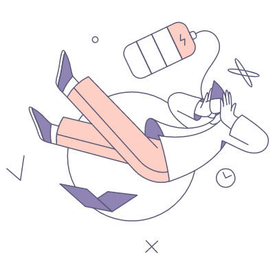

Learn what happens
when you get mental
health support
when you get mental
health support
It’s okay to feel nervous or unsure about getting
support.
support.
Maybe you feel uncomfortable
talking about your thoughts and
feelings. Maybe you think your
situation isn’t bad enough or you don’t want to be a burden.
talking about your thoughts and
feelings. Maybe you think your
situation isn’t bad enough or you don’t want to be a burden.
The mental health care community is made up of
caring, non-judgmental professionals and people –
just like you – at all stages of their journey to
recovery.
caring, non-judgmental professionals and people –
just like you – at all stages of their journey to
recovery.
We’re here to support you.
